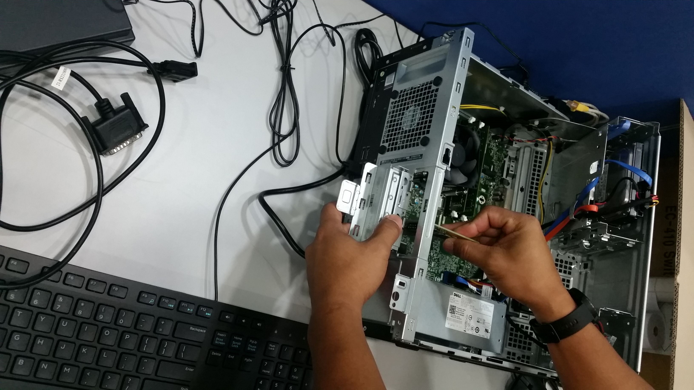
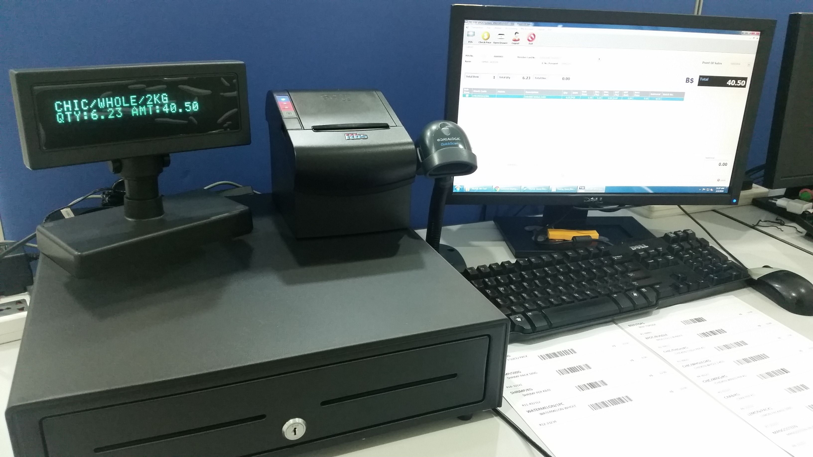
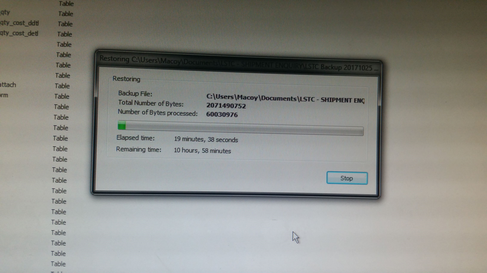
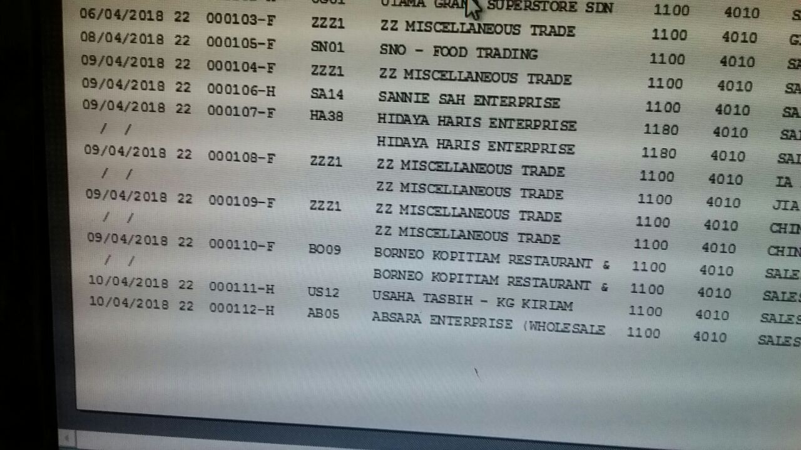
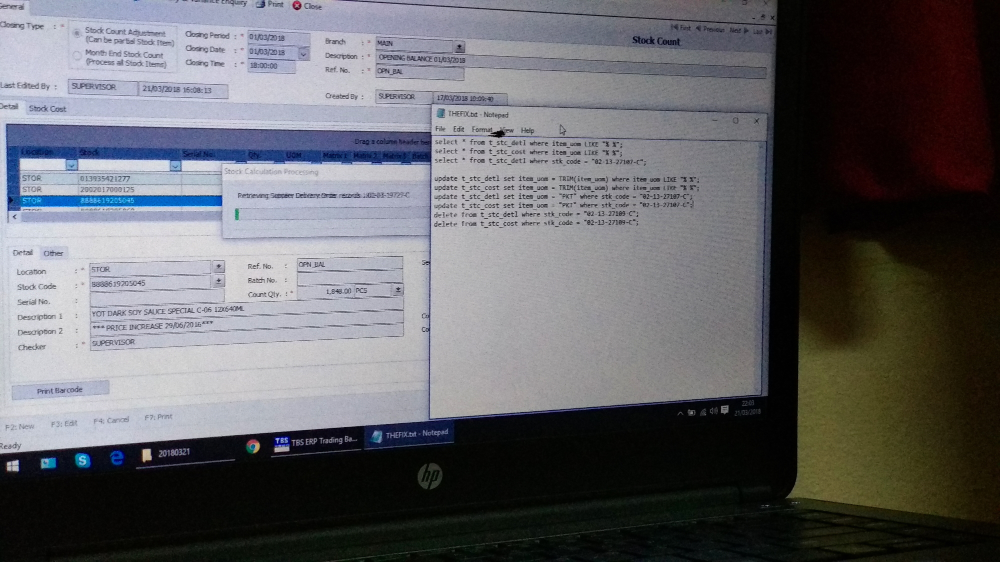

GITHUB PROJECT
Professional Portfolio
A personal portfolio showcasing product, business analysis and development experience.
View repository ↗PRODUCT / TECHNOLOGY / DELIVERY
I bridge product, business and technology to turn ideas into practical, accessible and maintainable digital experiences.
01 / ABOUT
I'm a Technical Business Analyst and Product Owner with a strong frontend development background. My work sits at the intersection of customer needs, business outcomes and engineering delivery.
I've worked across product discovery, requirements, user stories, UX/UI, backlog management, testing, integrations, APIs, CMS platforms and production support.
I enjoy taking complex requirements and turning them into clear, testable and usable digital solutions.
TECHNOLOGY / TOOLBOX
02 / CAREER & WORK
GITHUB PROJECT
A personal portfolio showcasing product, business analysis and development experience.
View repository ↗
Turning business requirements into practical digital product outcomes.

Mapping processes, requirements and acceptance criteria into actionable work.

Building responsive interfaces with accessible and maintainable code.

Working with APIs, structured data, CMS platforms and connected services.

Functional, regression, UAT and release support across agile delivery.

Connecting stakeholders, designers, developers and product teams.
03 / CONTACT
If you'd like to discuss a product, technical BA or development opportunity, feel free to get in touch.